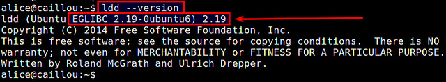
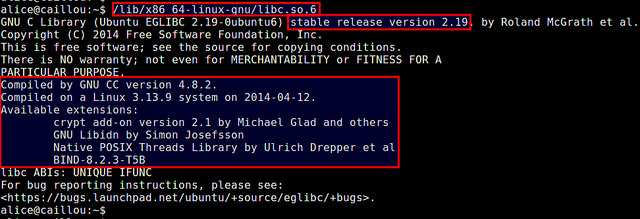

Библиотека GNU C (glibc) - это реализация стандартной библотеки C от GNU, которая является критичным компонентом инструментария GNU, используемым вместе с binutils и компилятором для сборки бинарных файлов пользовательских приложений для целевой архитектуры.
При сборке из исходного кода некоторые программы в Linux могут требовать линковки с glibc определенной версии. В этом случае вам необходимо проверить, какая версия этой библиотеки установлена у вас в системе.
Ниже два простых способа проверки версии glibc в Linux.
Способ первый (быстрый)
Простая команда для проверки версии библиотеки GNU C:
$ ldd --version

В этом примере установлена glibc версии 2.19.
Способ второй (определение по файлу библиотеки)
Этот способ заключается в том, что можно "ввести" библиотеку glibc (т.е. libc.so.6) в командной строке, как если бы это была команда.
В выводе будет детальная информация о библиотеке, включая ее версию, а также информацию о компиляторе GNU и доступных расширениях glibc. Местонахождение glibc зависит от конкретного дистрибутива и архитектуры процессора.
В 64-битной системе на базе Debian:
$ /lib/x86_64-linux-gnu/libc.so.6
В 32-битной системе на базе Debian:
$ /lib/i386-linux-gnu/libc.so.6
В 64-битной системе на базе Red Hat:
$ /lib64/libc.so.6
В 32-битной системе на базе Red Hat:
$ /lib/libc.so.6
Ниже пример вывода.
